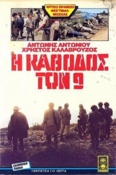

Also known as:Η κάθοδος των εννέα (original title)
Country:Greece, 122 minutes
Spoken languages:Greek
Genres:War, Adventure
Director(s):Christos Siopahas
Writer(s):Thanasis Valtinos, Thanasis Valtinos
Video Codec:Unknown
Number: 2837

Certification:
Storyline:
Summer 1949: end of the civil war in Greece. The last band of guerrillas of the Democratic Army is forced to abandon Mount Taygetus and to head for the sea. Everything behind them has collapsed and they can count on help from no one. In this long, desperate and aimless march, the group will end up by being annihilated by the National Army and the armed villagers.
Cast:
Christos Kalavrouzos (as Nikitas), Antonis Antoniou (as Kostis), Vasilis Tsaglos (as Sarantos), Elias Yannitsos (as Nasios), Kostas Haralabidis
Medium: Media file,
Location: D:\Pilot License Material\DC3\9 Descent.mp4
Loaned: No
Aspect ratio: Unknown